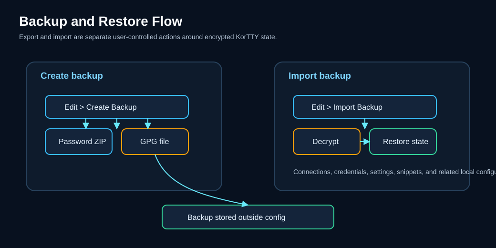

Backup & restore¶
KorTTY creates encrypted backups of all your settings, connections, credentials, and SSH keys. Use backup and restore to protect your configuration or move it between machines.

Features¶
- Encrypted backups — All backups are encrypted using either password-protected ZIP or GPG encryption
- Configuration backup — Includes connections, credentials, credential environments, SSH/GPG keys, trusted interactive SSH host keys, global settings, custom terminal themes, JobScheduler configuration, snippets and their stored code analyses, AI chat history, AI Swarm chats, local-model registrations (GGUF and MLX), and knowledge-store source metadata
- Regenerable local AI data excluded — GGUF weights, native llama.cpp runtimes, signed-catalog cache, temporary sidecar files, and HNSW snapshots are intentionally not copied into the archive
- Projects directory — All saved project workspaces are included in the backup
- Automatic rotation — Old backups are automatically moved to an
old-backupssubdirectory with timestamps - Configurable retention — Set a maximum number of backups to keep (0 = unlimited; oldest backups are deleted automatically)
- Import/restore — Restore from previously created backups with optional overwrite control
- Flexible decryption — Both password-encrypted ZIP and GPG-encrypted formats are supported for import; korTTY recognises the format from the file content, not from its name
Creating a backup¶
- Open Edit → Create Backup... or press Ctrl+Shift+B (Cmd+Shift+B on macOS)
- Select a destination directory for the backup file
- The backup is created using the encryption method configured in Settings → Backup
KorTTY names the current backup kortty-backup.zip (password-protected ZIP) or kortty-backup.zip.gpg (GPG) in the target directory. The new backup is written completely first; only then is any current backup of either kind already there rotated into an old-backups subdirectory with a timestamp appended, keeping its .zip or .zip.gpg ending (e.g., kortty-backup_2025-06-24_14-30-45.zip.gpg). If creating the backup fails, the existing current backup stays untouched.
The backup includes:
| Item | Details |
|---|---|
| Connections | All saved SSH connections and groups |
| Credentials | Stored usernames and passwords (encrypted) |
| Credential environments | Your custom credential environments and the tab colors of all environments (environments.xml); the built-in environments themselves need no backup |
| SSH keys | Key references with encrypted passphrases, plus the copied key files in ~/.kortty/ssh-keys/ |
| Trusted interactive hosts | ssh-host-keys.properties, shared by Terminal, SFTP, and the Mosh SSH bootstrap; the transient .lock companion is not included |
| GPG keys | GPG public keys for backup encryption |
| Settings | Global application settings, terminal configurations, and AI profiles |
| Themes | Terminal color themes, including the ones you created (themes.xml) |
| JobScheduler jobs | All scheduled jobs, host-key pins, and encrypted sudo passwords |
| Snippets | Code snippets and script templates with metadata, their folder structure, file names and executable flags |
| Snippet variables | Custom variables for snippet substitution |
| Snippet analyses | The stored Full code analyses of every snippet and every analysed folder, with their apply runs, diagrams and modularization proposals |
| AI chats | Saved AI conversation histories and profiles |
| AI Swarm chats | Saved swarm chats, including the ones scheduled AI Swarm jobs store (swarm-chats.xml) |
| Local AI configuration | Local GGUF registrations and typed launch settings, MLX model registrations, Text/Coding roles, preferred runtime backend/update policy, and encrypted Hugging Face token |
| Knowledge-store configuration | Store metadata and source paths, filters, sync modes, and embedding configuration; not the HNSW vectors |
| Projects | All .kortty project workspace files |
Backup encryption¶
Password-protected ZIP (default)¶
- Open Settings → Backup
- Select Encryption Type: Password
- Choose or create a credential to use as the encryption password
- Optionally set Maximum Backups (0 = unlimited)
- Save
Password-protected backups are encrypted with AES-256 (via the zip4j library); the credential's password encrypts all files in the archive. Backups created by older korTTY versions used legacy ZIP encryption and can still be imported — the decryption method is read from the archive itself. Note that AES-encrypted ZIPs need an AES-capable tool (7-Zip, WinZip, unzip 6+) if you ever extract one outside korTTY.
GPG encryption¶
- Open Settings → Backup
- Select Encryption Type: GPG
- Choose a GPG key from Manage GPG Keys...
- Optionally set Maximum Backups (0 = unlimited)
- Save
GPG backups are encrypted for the public key of your selected GPG key. KorTTY builds an unencrypted ZIP in a private temporary folder that only your user can read, encrypts it with gpg, stores the result as kortty-backup.zip.gpg and then deletes the temporary ZIP with its folder. Creating a GPG backup needs the installed gpg and the recipient's public key; restoring it needs gpg and the matching private key, so keep that key (and its passphrase) somewhere other than the backup.
Tip
If you don't have GPG keys set up yet, use Management → Manage GPG Keys... to import keys from your system keyring or add them manually.
Importing a backup¶
- Open Edit → Import Backup...
- Select a backup file (
.zipor.zip.gpg) - If the backup is a password-protected ZIP, enter the password when prompted; GPG backups ask for no ZIP password —
gpgmay ask for the passphrase of your private key instead - Choose whether to Overwrite Existing Files:
- OK — Backup files will replace any existing files in your configuration
- Cancel — Existing files are skipped; only missing files are imported
- Restart the application for all changes to take effect
KorTTY recognises the backup format from the file content, not from its name, so GPG backups that older versions saved as kortty-backup.zip import as GPG backups too. A file that is neither a ZIP archive nor GPG-encrypted is rejected before anything is restored.
After the import, korTTY reloads the restored connections, credentials, environments, SSH and GPG keys, settings, themes, snippets, snippet variables and saved AI and swarm chats, so a later save does not overwrite them with what was loaded before. The open terminal tabs then show the tab colors of the restored connections and credential environments.
Each restored file replaces the local one atomically, so an interrupted import never leaves a half-written file behind. On macOS and Linux, connections.xml, credentials.xml, ssh-keys.xml, job-scheduler.xml and master.key are restored owner-only (rw-------); the other files keep the permissions of the file they replace, and a file that did not exist locally is created owner-only. If a restored connections, credentials, SSH key, GPG key or environments file cannot be parsed, the reload moves it aside as <name>.corrupt-<timestamp> and korTTY keeps what it had loaded before, which its next save writes to a fresh file; a themes file that cannot be parsed is moved aside the same way and replaced by the built-in themes.
Warning
Importing a backup with Overwrite enabled will replace your current settings, connections, and credentials. If you are unsure, choose Cancel to merge the backup without overwriting.
A backup with another master password
If an overwriting import brings the master.key of another master password, everything korTTY has loaded still belongs to the old one. korTTY tells you to restart and quits without saving its current data, so the restored files stay as they are. Start korTTY again and unlock it with the master password of the backup.
A merging import (Cancel at the overwrite question) keeps your own master.key. If the backup was made with another master password and brings files that hold secrets — connections.xml, credentials.xml, ssh-keys.xml, global-settings.xml, job-scheduler.xml or rag/stores.json — korTTY asks once for the master password of the backup (masked, never logged) and checks it against the backup's master.key. It then decrypts the passwords, passphrases, keys and tokens of those files with the backup's master password and encrypts them again with your current one before anything is copied, and the success message says how many secrets were re-encrypted. A secret the backup's master password cannot decrypt either is left empty rather than imported unreadable. If you cancel the prompt, enter a wrong password three times or the vault is locked, the files with secrets are not imported at all and the message lists them; the other files are still imported, and you can import the backup again to enter the password. korTTY never writes a secret encrypted with a master password it does not have.
Backup file contents¶
Both .zip and .zip.gpg backups contain the same files:
connections.xml— All SSH connections and groupscredentials.xml— Stored credentials (still encrypted with your master password)environments.xml— Custom credential environments and environment tab colorsssh-keys.xml— SSH key references and encrypted passphrasesssh-keys/— Copied SSH key files (only keys you placed there via Copy to User Directory; keys referenced in their original locations are not collected). Restored key files get owner-only permissions, and an import merges — it never deletes or, without Overwrite, replaces keys already presentssh-host-keys.properties— Trusted public host keys for interactive Terminal, SFTP, and Mosh bootstrap connections (ssh-host-keys.properties.lockis intentionally excluded)gpg-keys.xml— GPG public keysglobal-settings.xml— Application settings, AI profiles, terminal defaultsthemes.xml— Terminal color themes, including your ownjob-scheduler.xml— JobScheduler jobs, host-key pins, encrypted sudo passwordssnippets.xml— Code snippets and templatessnippet-variables.xml— Custom snippet variablessnippet-analyses/— Stored Full code analyses, one file per snippet. An import merges them: analyses that exist only locally are kept, missing ones are added, and with Overwrite a local file is replaced only when the backup's copy is newer. Unsaved snippet drafts (snippet-drafts/) are not includedai-chats.xml— Saved AI conversationsswarm-chats.xml— Saved AI Swarm chatsmaster.key— Salt and verification hash of your master password, so the restored secrets can be unlocked with itllm/models.xml— Local GGUF registrations and runtime settings (model weights are not included)llm/mlx-models.json— MLX model registrations (model weights are not included)rag/stores.json— Knowledge-store and source configuration (vector snapshots are not included)projects/— All saved project workspace files (.kortty)
The session snapshots in ~/.kortty/session/, which File → Restore Previous Session opens, are not included: they describe the windows and tabs of this computer, and the Recently Closed list they keep stays on this computer with them. After a restore, Restore Previous Session still opens the session of this computer, and its tabs open with the restored connections. See Previous session.
Note
All passwords and credentials inside the backup remain encrypted with your master password. When you import a backup, you must unlock the master password for KorTTY to decrypt the credentials. A merging import of a backup made with another master password re-encrypts them with your current one (see A backup with another master password).
Rebuild local AI assets after a restore
The backup excludes llm/models/, llm/runtime/, llm/catalog/, llm/run/, and local index.hnsw snapshots. After moving to another computer, restore or download the GGUF files and a compatible runtime, reconnect any external model/source paths, then run Update now in each knowledge store to regenerate its index. The signed catalog cache refreshes automatically or falls back to the bootstrap. Original source documents and external Qdrant data are not part of a korTTY configuration backup.
Backup retention and cleanup¶
When you create a new backup in a directory that already contains one, KorTTY:
- Creates the new backup —
kortty-backup.zipfor a password-protected ZIP,kortty-backup.zip.gpgfor GPG — and stops here, leaving the existing backup untouched, if that fails - Moves every existing current backup, of either kind, to
old-backups/kortty-backup_<timestamp>.ziporold-backups/kortty-backup_<timestamp>.zip.gpg; a backup rotated in the same second gets-1,-2… appended instead of replacing the earlier one - If the number of old backups exceeds Maximum Backups, deletes the oldest ones
Maximum Backups counts ZIP and GPG backups together. After you switch the encryption type, the first new backup also rotates the current backup of the other type, so the oldest old backup can be deleted one backup earlier than you might expect.
To keep unlimited old backups, set Maximum Backups to 0 in Settings → Backup. To keep only one old backup next to the current one, set Maximum Backups to 1.
Using backups across machines¶
- Export your current configuration:
-
On machine A, open Edit → Create Backup... and save to a USB drive or cloud storage
-
Move the backup file:
-
Copy
kortty-backup.zip(orkortty-backup.zip.gpg) to machine B; for a GPG backup, machine B also needsgpgand the private key of the backup's GPG key -
Import on the new machine:
- On machine B, open Edit → Import Backup...
- Select the backup file from step 2
- Enter the backup password if prompted
- Choose Cancel in the overwrite question unless you want to replace existing connections
- Restart KorTTY
All backed-up connections, settings, snippets, saved chats, interactive host-key trust decisions, model registrations, and knowledge-source definitions will be available on machine B. Restored host keys are still matched by normalized host name and port, so a changed key remains blocked after migration. Local model weights, runtime packages, source documents, and HNSW vectors must be restored or regenerated separately.
Troubleshooting¶
- "Backup file not found"
- Verify the file path is correct and the file exists. Check the directory permissions.
- "Password required for password-encrypted backup"
- Password-protected backups need the correct password. Verify you are entering the credential password (from Settings → Backup), not your master password.
- "… is not a korTTY backup: it is neither a ZIP archive nor a GPG-encrypted file"
- The selected file is neither a ZIP archive nor GPG-encrypted data, for example a different file with a
.zipname or a backup that was cut off while copying. Select thekortty-backup.ziporkortty-backup.zip.gpgfile itself. - "GPG encryption failed"
gpgcould not encrypt the new backup: it is not installed, or the selected key's public key is neither in your GPG keyring nor available as the key file stored with the key in Manage GPG Keys.... The previous backup in the target directory is left as it was.- "GPG decryption failed"
gpgcould not decrypt the backup: the private key that matches the backup's GPG key is not in your keyring,gpgis not installed, or you cancelled the passphrase prompt. Import the private key into your GPG keyring (for example withgpg --import) and try again.- "GPG key not found"
- The GPG key used for encryption is missing. Use Management → Manage GPG Keys... to import or add the key, then try again.
- "No password selected for backup encryption" or "No GPG key selected"
- Configure a password credential or GPG key in Settings → Backup before creating a backup.
- A
*.corrupt-<timestamp>file appeared in~/.kortty - korTTY could not parse that data file at startup or after an import, so it moved the original aside under this name without changing it and continued without its content. Repair the file and, with korTTY closed, move it back under its original name, or restore the file from a backup.
- Import succeeded but changes did not take effect
- Restart KorTTY for imported settings to become active. If you imported credentials, you may also need to unlock the master password after restart.
- Backup file is larger than expected
- Large backups can occur if you have many saved AI chats or a large projects directory. GGUF weights, llama.cpp runtime packages, and HNSW snapshots are excluded and cannot be the cause.